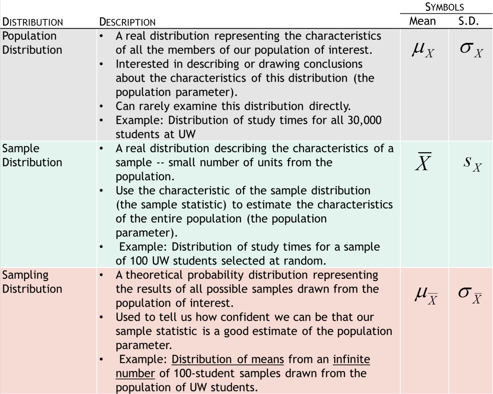
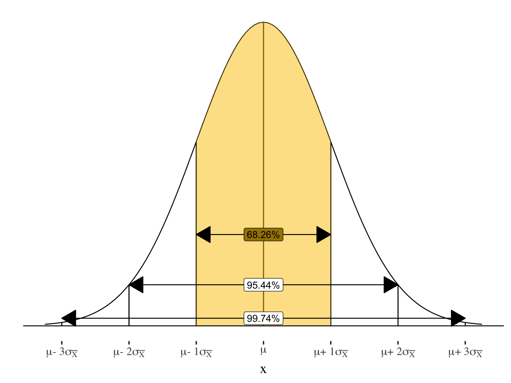
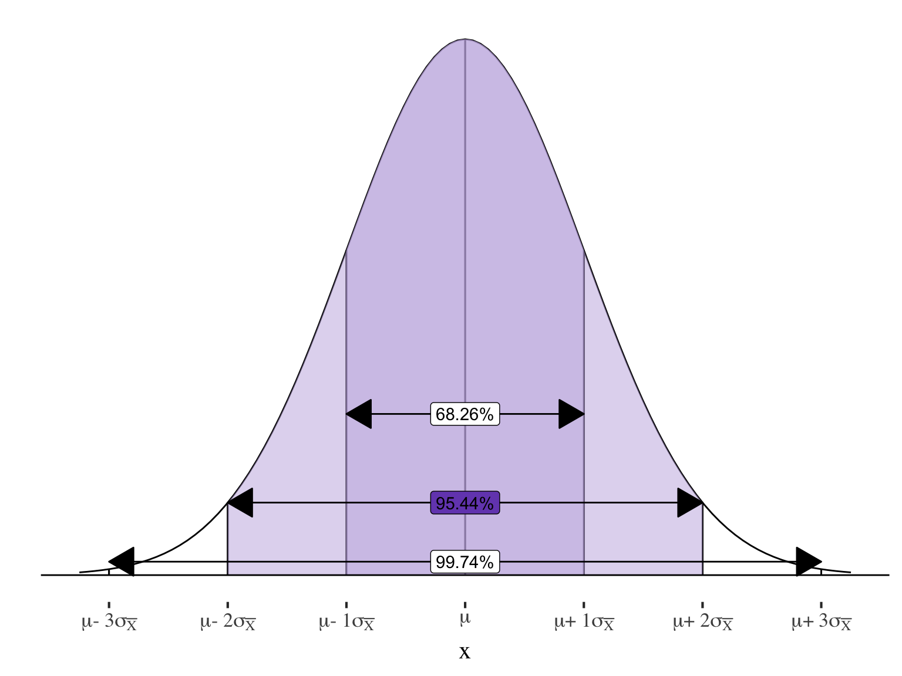

Sampling distributions,
Central limit theorem,
& the Logic of inference
SOC 221 • Lecture 5
Victoria Sass
Monday, July 8, 2024
Sampling distributions
Descriptive –> Inferential statistics
Where are we?
- So far: Worked on descriptive statistics – tools to describe distributions
- NEXT: Building the tools for inferential statistics
- Example: Want to know about the average study time for the population of UW students.
- NEXT: Building the tools for inferential statistics
Inferential statistics
Statistical procedures used
to draw conclusions
(or inferences) about
a population based on
data drawn from a sample
\(\bar{X}\) —INFERENCE–> \(\mu_x\)
Descriptive –> Inferential statistics
Where are we?
- So far: Worked on descriptive statistics – tools to describe distributions
- NEXT: Building the tools for inferential statistics
- Example: Want to know about the average study time for the population of UW students.
- NEXT: Building the tools for inferential statistics
Inferential statistics
Statistical procedures used
to draw conclusions
(or inferences) about
a population based on
data drawn from a sample
\(\bar{X}\) —INFERENCE–> \(\mu_x\)
Population parameter: The characteristic of the population that we are interested in knowing (i.e. the mean study time of all UW students)
Sample statistic: The characteristic of the sample that we actually observe (i.e. the mean study time of a SAMPLE of UW students)
The challenge of making inferences
Drawing inferences entails uncertainty
Even with a good sample, the sample is likely to differ from the population (sample statistic is likely to be different from our population parameter, just by chance)
Challenge
Assessing the risk of being wrong (being way off) in making an inference from observed sample statistics to unknown population parameters.
Key questions
- How often would this procedure (drawing a sample, inferring about the population) give us something close to the correct answer if I used it over and over?
or - What is the probability that the inference I draw from one sample is wrong (way off from the population characteristic of interest)?
Using these tools for inference
Example: Want to know how much UW students study on average
\(\bar{X}\) —INFERENCE–> \(\mu_x\)
Sample statistic: The characteristic of the sample that we actually observe (i.e. the mean study time of a SAMPLE of UW students)
For example: draw a random sample of 100 students and observe \(\bar{X} = 14.5\)
Population parameter: The characteristic of the population that we are interested in knowing (i.e. the mean study time of all UW students)
Our goal: Estimate the unknown population parameter \(\mu_x = ?\)
Estimating Population Parameters: TWO OPTIONS
One option: Just assume that the population mean is equal to the sample mean
\[ \mu_x = \bar{X} = 14.5 \]
- Called a point estimate
Potential problems with this strategy?
- Very likely to be wrong!
- Even with a random sample, the sample statistic is like to miss the true population parameter by at least a little
- Reflects chance sampling error
- In reality:
- Even with a random sample, the sample statistic is like to miss the true population parameter by at least a little
\[ \mu_x \neq \bar{X} \]
SAMPLING ERROR
The difference
between a sample
statistic used to
estimate a population
parameter and the
actual (but unknown)
value of the
population
parameter.
Estimating Population Parameters: TWO OPTIONS
Better option: Create a CONFIDENCE INTERVAL
\[ \bar{X} \]
CONFIDENCE INTERVAL
A range of scores, centered on the sample mean, in which we think the population mean is likely to be located.
Building a margin of error around our sample mean
Estimating Population Parameters: TWO OPTIONS
Better option: Create a CONFIDENCE INTERVAL
\[ \bar{X} \]
Confidence intervals are defined by the Confidence Level (our certainty that the confidence interval will contain the true population parameter)
With a 95% confidence interval, we are 95% sure that the interval we construct contains the true population parameter we are interested in.
Over the long run, there is a probability of .99 that the actual population parameter falls within a 99% confidence interval that we construct
Estimating Population Parameters: TWO OPTIONS
Better option: Create a CONFIDENCE INTERVAL
\[ \bar{X} \]
CONFIDENCE INTERVAL
A range of scores, centered on the sample mean, in which we think the population mean is likely to be located.
Q: What is the ADVANTAGE of a confidence interval over a point estimate?
A: We are less likely to be wrong, and we can quantify the risk of being wrong.
Sampling distribution
Sampling Distribution
A theoretical probability distribution of all possible sample values for the statistic in which we are interested.
Key tool for inferential statistics
Allows us to think about how our one single sample result relates to all possible sample results and, by extension, the population we are interested in drawing inferences about.
Imagine drawing ONE sample from the population and calculating the sample mean

Imagine drawing ONE sample from the population and calculating the sample mean
Just by chance, our sample mean may be a little different than the true population mean.
Distance between the sample mean and the actual population mean reflects random sampling error
Now imagine drawing LOTS of independent samples and calculating the mean of X for each one.

Interesting features of the
sampling distribution
(when certain conditions are met):
• Normal distribution
• Mean of the sampling distribution is equal to the population mean
This produces a SAMPLING DISTRIBUTION of sample means
So can use what we know about the normal distribution to think about the location of sample means relative to the population mean.
68.26% of samples will be within 1 \(\sigma\) of the pop. mean
95% of sample means will be within 1.96 \(\sigma\) of the pop. mean
Sampling Distribution
Important facts about sampling distributions:
- Theoretical distributions: can’t take every possible sample from the population
- Each statistic that we might be interested in has a theoretical sampling distribution
- Just by chance, the different samples making up this sampling distribution will give different statistics
- e.g., the mean for each sample will probably be slightly different because different individuals make up the different samples.
- Reflects chance sampling error.
- “Probability distribution” means that if we know the shape of the distribution we can find the probability of a particular sample score within the distribution of all the possible sample scores
Three types of distributions
Break!
Central limit theorem
Central Limit Theorem (CLT)
If all possible random samples of size \(N\) are drawn from a population with the mean \(\mu_X\) and the standard deviation \(\sigma_X\), then as \(N\) becomes larger, the sampling distribution of the sample means becomes approximately normal, with mean equal to \(\mu_X\) and standard deviation equal to the population standard deviation divided by square root of the sample size.
Implication of central limit theorem
- Central limit theorem tells us that if the size of our random sample is large enough, we can assume that the sampling distribution of all such possible samples is:
- Normally distributed
- Mean: \(\mu_\bar{X}\) \(= \mu_X\)
Implication of central limit theorem
- Central limit theorem tells us that if the size of our random sample is large enough, we can assume that the sampling distribution of all such possible samples is:
- Normally distributed
- Mean: \(\mu_\bar{X}\) \(= \mu_X\)
Check out this new symbol:
The population mean of sample means
(i.e., the average of the means you would
calculate from all possible samples)
Implication of central limit theorem
- Central limit theorem tells us that if the size of our random sample is large enough, we can assume that the sampling distribution of all such possible samples is:
- Normally distributed
- Mean: \(\mu_\bar{X}\) \(= \mu_X\)
- Standard Error = \(\sigma_\bar{X}\) \(= \frac{\sigma}{\sqrt{n}}\)
Standard error:
The the standard deviation
in the sampling distribution
(in this case, of all
possible sample means)
Implication of central limit theorem
- Central limit theorem tells us that if the size of our random sample is large enough, we can assume that the sampling distribution of all such possible samples is:
- Normally distributed
- Mean: \(\mu_\bar{X}\) \(= \mu_X\)
- Standard Error = \(\sigma_\bar{X}\) \(= \frac{\sigma}{\sqrt{n}}\)

Just over 68% of sample means will be within ±1 standard error of the true population mean
Implication of central limit theorem
- Central limit theorem tells us that if the size of our random sample is large enough, we can assume that the sampling distribution of all such possible samples is:
- Normally distributed
- Mean: \(\mu_\bar{X}\) \(= \mu_X\)
- Standard Error = \(\sigma_\bar{X}\) \(= \frac{\sigma}{\sqrt{n}}\)

\(95.44\%\) of sample means will be within \(\pm2\) standard errors of the true population mean
And exactly \(95\%\) will be within \(1.96\) standard errors
How does this help us?
SAMPLING DISTRIBUTION of sample means
If, 95% of the samples are within 1.96 standard errors of the true population mean . . .
If, 95% of the samples are within 1.96 standard errors of the true population mean . . .
. . . then for 95 samples out of 100, we will find the true population mean if we look within 1.96 standard errors of the sample mean.
If, 95% of the samples are within 1.96 standard errors of the true population mean . . .
. . . then for 95 samples out of 100, we will find the true population mean if we look within 1.96 standard errors of the sample mean.

If, 95% of the samples are within 1.96 standard errors of the true population mean . . .
. . . then for 95 samples out of 100, we will find the true population mean if we look within 1.96 standard errors of the sample mean.
Confidence intervals
The BIG IDEA:
- The sampling distribution and CLT tells us how close to the population mean (\(\mu\)) the sample mean (\(\bar{X}\)) is likely to be
- We can use this knowledge to figure out how close the true population mean (\(\mu\)) is likely to be to the one sample mean (\(\bar{X}\))that we observe
- Build a confidence interval around our sample statistic (mean) to define the range in which we think the population parameter can be found
Using these tools for inference
Example: Want to know how much UW students study on average
\(\bar{X}\) —INFERENCE–> \(\mu_x\)
Sample statistic: The characteristic of the sample that we actually observe (i.e. the mean study time of a SAMPLE of UW students)
For example: draw a random sample of 100 students and observe \(\bar{X} = 14.5\)
Population parameter: The characteristic of the population that we are interested in knowing (i.e. the mean study time of all UW students)
Our goal: Estimate the unknown population parameter \(\mu_x = ?\)
Confidence intervals
\[ \bar{X} \]
Create a range of scores, centered on the sample mean, in which we think the population mean is likely to be located
Building a margin of error around our sample mean
Confidence interval:
\(\text{sample statistic} \pm \text{margin of error}\)
⬅️
All confidence intervals take this form